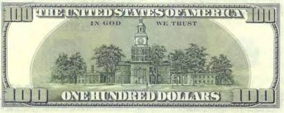
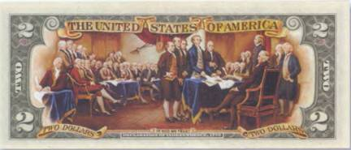

Тайны бумажных денег : Загадки Декларации независимости

Оборотную сторону банкноты в 2 доллара занимает репродукция с картины Джона Трамбла (John Trumbull) «Подписание Декларации независимости» (1817), которая сегодня висит в ротонде Капитолия. Подписание самого важного в истории Соединенных Штатов Америки документа состоялось 2 августа 1776 г. А принята была «Единогласная декларация тринадцати Соединенных Штатов Америки» (полное оригинальное название документа) еще 4 июля в Филадельфии (штат Пенсильвания). С тех пор 4 июля празднуется самый важный национальный праздник в США — День независимости. Интересно, что из изображенных на картине 48 человек (на банкноте можно видеть только 42), лично поставивших свои подписи на пергаменте Декларации, в момент создания картины были живы только 36. Всего же в подписании документа приняли участие 56 человек, имена которых вошли в историю государства. Этому событию посвящены сотни книг. Не смогли обойти его вниманием и нынешние хозяева Голливуда. В 2004 г. в прокат был запущен очередной приключенческий блокбастер «Сокровище нации». Где Бен Франклин Гейтс, роль которого блестяще сыграл Николас Кейдж, с помощью все той же Декларации отыскивает невероятно большой клад, спрятанный еще отцами-основателями американского государства. Авторы сценария великолепно сплели паутину интриг и тайн, окутавших действие фильма. Впрочем, некоторые из упомянутых там фактов вполне соответствуют действительности. Например, на оборотной стороне стодолларовой купюры США и в самом деле помещено изображение Дворца независимости, где был подписан известный документ (рис. 87).

А вот связь между положением стрелок на башенных часах этого здания и тайником, где якобы хранились изобретенные самим Франклином очки, — откровенная выдумка.
Репродукция с картины «Подписание Декларации независимости», помещенная на двухдолларовой банкноте, стала невольным свидетелем и одной пикантной тайны, которую до сих пор пытаются скрыть за океаном. С самым важным историческим документом США [23]случился непростительный конфуз, о котором, кстати, стало известно уже на следующий день после подписания Декларации. Что же произошло? В кинофильме «Сокровище нации» упоминается некий каллиграф Тимоти Мэтлэк (Timothy Matlack). Именно ему было поручено выполнить рукописный вариант Декларации, который впоследствии и был подписан представителями первых 13 штатов. Так вот, Мэтлэк сделал грубейшую ошибку в написании заглавия Декларации (кстати, об этом ни слова не упоминается в фильме!). Вместо положенных «United States of America» он начертал «United States of Жmerinca»!..
Только представьте себе весь ужас, который днем позже пережил непосредственный начальник Мэтлэка Чарльз Томсон, обнаружив эту чудовищную описку (описку ли?!). Просто поразительно, как никто из 56 поставивших на документе свои автографы не обратил на нее внимания! Томсон тут же распорядился спрятать оригинал в архив и никому не показывать, а Мэтлэка понизили в должности. Но на этом история с «Соединенными Штатами Жмеринки» не закончилась. Она нашла свое продолжение в 2005 г. благодаря кропотливому поиску в киевских архивах Артемия Лебедева. Как оказалось, тот самый Тимоти Мэтлэк — каллиграф и секретарь содружества Пенсильвании — был родом из местечка Жмеринка (сегодня Украина). А его настоящее имя звучало как Томислав Матлаковский. Г-н Лебедев отмечает в книге «Тайна Декларации независимости», что «за несколько лет до начала революционных событий в Новом Свете он (Томислав Матлаковский) покинул Брацлавское воеводство и уплыл в Америку, где сначала работал пивоваром, потом увлекся квакерским движением, а затем пошел в политику. Иногда ему поручали каллиграфические работы — его перу принадлежат некоторые важные бумаги, включая указ о назначении Джорджа Вашингтона главнокомандующим Континентальной армией».
Те из читателей, кто воочию лицезрел Декларацию в Вашингтоне, в мемориальном зале здания Национальных архивов США, возможно, не согласятся с этим заявлением (она выставлена с декабря 1952 г.). Потому как в находящемся там под толстым бронированным стеклом документе отчетливо читается «United States of America». Однако это вовсе не оригинал. Таких копий было выполнено несколько. Автором же именно этой стал Вильям Дж. Стоун, выполнивший заказ Конгресса в 1820 г. Он приложил все усилия, чтобы исправить первоначальную надпись. И все-таки с заглавной буквой в слове «America» («Ж» вместо «А») у него ничего не вышло. Конечно, если не знать вскрытой Артемием Лебедевым истории, то можно подумать, что эта буква просто украшена «изысканным» вензелем.

На момент принятия и подписания американской Декларации независимости в Конгрессе председательствовал Джон Хэнкок (John Hancock) (просьба не путать с киношным героем «Хэнкока», снятого по одноименному американскому комиксу!). На картине Трамбла он показан сидящим на почетном месте за столом, как и полагалось президенту Конгресса (рис. 88).
Хэнкок первым поставил подпись под тестом Декларации. Она вышла у него размашистой и самой крупной из всех. На что президент Конгресса не без гордости заявил: «Такую подпись Георг III уж обязательно разглядит». Имелся в виду английский король, которому позже была отправлена копия документа.
С тех пор американцы, предлагая расписаться под документом, часто в шутку говорят: «Сделай хэнкок!»